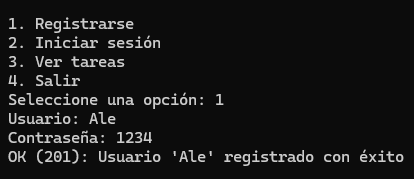
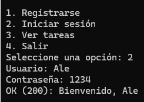
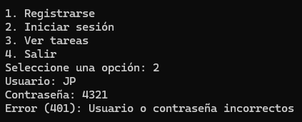
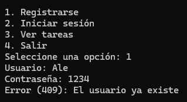
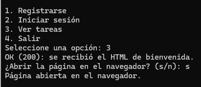
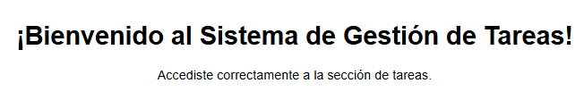
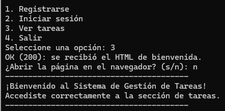

Descripción
API REST del PFO 2 de Programación sobre Redes. Permite registrar usuarios con contraseñas hasheadas, iniciar sesión y acceder a una página de bienvenida de tareas. La persistencia es en SQLite, siguiendo el modelo cliente-servidor visto en clase.
Cómo ejecutar
1. Instalar dependencias
pip install -r requirements.txt2. Servidor (terminal 1)
python servidor.pyEscucha en http://localhost:5000. La base usuarios.db se crea sola.
3. Cliente (terminal 2)
python cliente.pyEndpoints
| Método | Ruta | Descripción |
|---|---|---|
| POST | /registro |
Registra un usuario (contraseña hasheada) |
| POST | /login |
Verifica credenciales e inicia sesión |
| GET | /tareas |
HTML de bienvenida (requiere login) |
Ejemplos con curl
Registrar
curl -X POST http://localhost:5000/registro \
-H "Content-Type: application/json" \
-d '{"usuario": "juan", "contraseña": "1234"}'Login (guarda cookie de sesión)
curl -X POST http://localhost:5000/login \
-H "Content-Type: application/json" \
-d '{"usuario": "juan", "contraseña": "1234"}' \
-c cookies.txtTareas
curl http://localhost:5000/tareas -b cookies.txtRespuestas esperadas
- Registro correcto →
201 - Usuario repetido →
409 - Login correcto →
200 - Credenciales incorrectas →
401 /tareassin sesión →401
Capturas de pantalla
Pruebas del sistema desde el cliente de consola y el navegador:







Respuestas conceptuales
¿Por qué hashear contraseñas?
Guardar contraseñas en texto plano es un riesgo: si la base se filtra, cualquiera
podría leerlas. El hash es unidireccional: no se puede revertir
para obtener la contraseña original. Al login, el servidor hashea lo ingresado y
lo compara con el hash guardado. Eso refuerza la seguridad del servidor en la
arquitectura cliente-servidor. Se usó la librería werkzeug.security,
que viene con Flask.
Ventajas de SQLite en este proyecto
- No hace falta un servidor de base de datos aparte.
- Viene con Python (
sqlite3), sin dependencias extra. - Todo vive en un archivo (
usuarios.db), fácil de entregar. - Los datos persisten aunque se reinicie el servidor.
- Ideal para un trabajo práctico chico como este.
Estructura del proyecto
PFO2/
├── servidor.py
├── cliente.py
├── index.html
├── README.md
├── requirements.txt
└── img/ (capturas de pantalla)